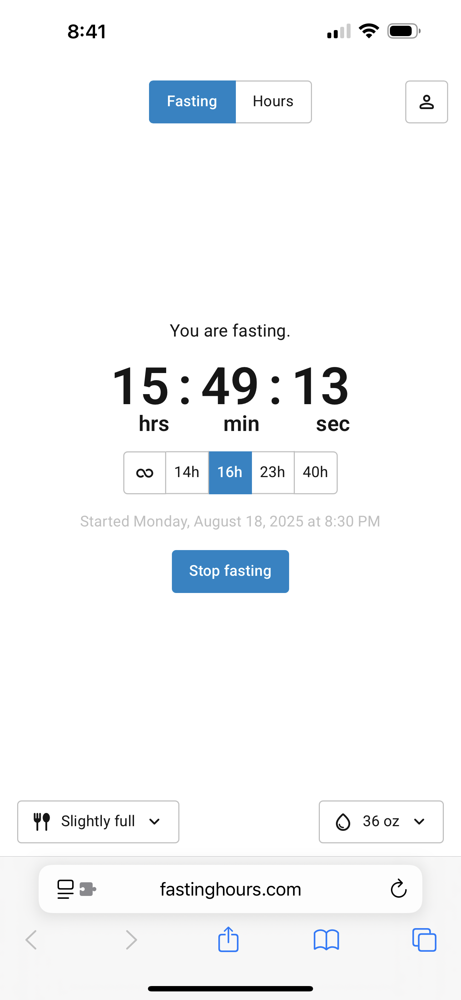
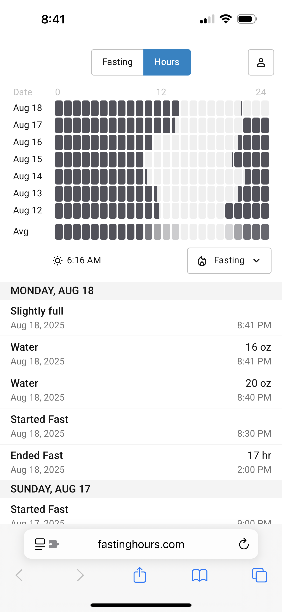
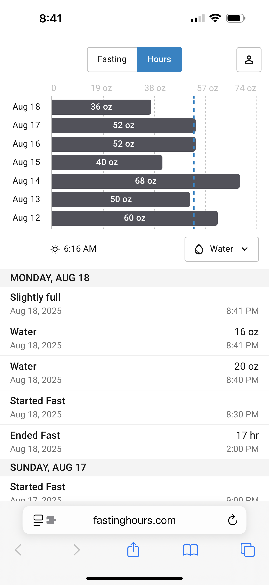

The simple fasting tracker that works on any device — desktop, tablet, or phone. No app to download, no account required. Build consistent habits, monitor your progress, and achieve lasting results — without counting calories.


